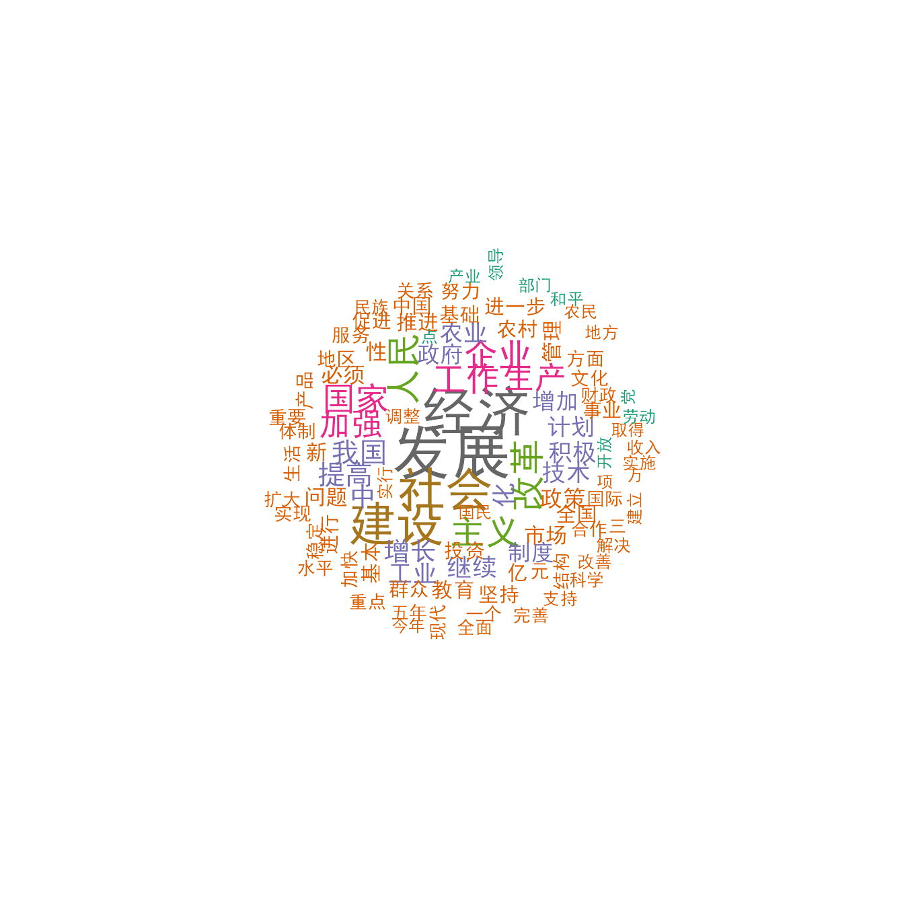

快速入门指南
quickstart_cn.Rmd软件包安装
quanteda已上传在CRAN上，所以可以使用GUI的R软件包安装程序进行安装，或执行：
请参阅https://github.com/quanteda/quanteda上的说明来安装GitHub版本。
推荐安装
我们建议安装以下软件包，以便更好地支持和扩展quanteda的功能：
- readtext: 可将几乎任何格式的文本文件读入R
- spacyr: 使用spaCy库的NLP，包括词性标注，命名实体和依存语法
- quanteda.corpora: 用于quanteda的附加文本数据
创建语料库
加载quanteda以便使用软件包中的数据和功能。
目前可用的语料库资源
quanteda有一个简单而强大的配套软件包用于加载文本文件: readtext。 这个软件包的主函数readtext()从磁盘或者URL中读取文件或者文件集，并且返回一个可以直接和corpus()构造函数一起使用的data.frame，可用来创建一个quanteda语料库。
readtext()可读取：
- 文本文件 (
.txt) - 逗号分割的（
.csv）文本文件 - XML数据
- 取自脸书API的JSON格式的数据
- 取自TwitterAPI的JSON格式的数据
- 常用的JSON数据
语料库创建函数corpus()可用于：
- 字符类向量，比如你使用其他工具已经加载到R工作空间的
-
tm 软件包中
VCorpus语料库对象 - data.frame 包含文本列和其他任何文件级元数据
从字符向量构建语料库
最简单的方式是从R中已经存在的文本向量创建一个语料库。这使得高级R用户可以灵活地选择文本输入，因为R有很多可以读取文本向量的方法。
一旦我们有了这种格式的文本数据，我们就可以直接调用语料库构造函数。以从内置的英国政党2010年选举宣言（data_char_ukimmig2010）中提取的有关移民政策的文本为例：
## Corpus consisting of 9 documents, showing 9 documents:
##
## Text Types Tokens Sentences
## BNP 1125 3280 88
## Coalition 142 260 4
## Conservative 251 499 15
## Greens 322 677 21
## Labour 298 680 29
## LibDem 251 483 14
## PC 77 114 5
## SNP 88 134 4
## UKIP 346 722 27我们也可以添加一些文档变量– quanteda 称之为此语料库的docvars()。
我们可以使用R的names()函数来读取字符向量data_char_ukimmig2010的名称，并且将其给文档变量赋值。
docvars(corp_uk, "Party") <- names(data_char_ukimmig2010)
docvars(corp_uk, "Year") <- 2010
summary(corp_uk)## Corpus consisting of 9 documents, showing 9 documents:
##
## Text Types Tokens Sentences Party Year
## BNP 1125 3280 88 BNP 2010
## Coalition 142 260 4 Coalition 2010
## Conservative 251 499 15 Conservative 2010
## Greens 322 677 21 Greens 2010
## Labour 298 680 29 Labour 2010
## LibDem 251 483 14 LibDem 2010
## PC 77 114 5 PC 2010
## SNP 88 134 4 SNP 2010
## UKIP 346 722 27 UKIP 2010readtext软件包加载文件
require(readtext)
# Twitter json
dat_json <- readtext("~/Dropbox/QUANTESS/social media/zombies/tweets.json")
corp_twitter <- corpus(dat_json)
summary(corp_twitter, 5)
# 通用json - 需要“textfield”说明符
dat_sotu <- readtext("~/Dropbox/QUANTESS/Manuscripts/collocations/Corpora/sotu/sotu.json",
textfield = "text")
summary(corpus(dat_sotu), 5)
# 文本文件
dat_txtone <- readtext("~/Dropbox/QUANTESS/corpora/project_gutenberg/pg2701.txt", cache = FALSE)
summary(corpus(dat_txtone), 5)
# 多文本文件
dat_txtmultiple1 <- readtext("~/Dropbox/QUANTESS/corpora/inaugural/*.txt", cache = FALSE)
summary(corpus(dat_txtmultiple1), 5)
# 包含取自文件名的docvars的多个文本文件
dat_txtmultiple2 <- readtext("~/Dropbox/QUANTESS/corpora/inaugural/*.txt",
docvarsfrom = "filenames", sep = "-", docvarnames = c("Year", "President"))
summary(corpus(dat_txtmultiple2), 5)
# XML 数据
dat_xml <- readtext("~/Dropbox/QUANTESS/quanteda_working_files/xmlData/plant_catalog.xml",
dat_xml = "COMMON")
summary(corpus(dat_xml), 5)
# csv 文件
write.csv(data.frame(inaug_speech = texts(data_corpus_inaugural),
docvars(data_corpus_inaugural)),
file = "/tmp/inaug_texts.csv", row.names = FALSE)
dat_csv <- readtext("/tmp/inaug_texts.csv", textfield = "inaug_speech")
summary(corpus(dat_csv), 5)quanteda语料库工作方式
语料库的原则
语料库被设计成原始文档的“库”，该文档被转换为UTF-8编码的纯文本文件，并与元数据一起分别存储于语料库级和文档级。我们给文档级元数据一个特殊的名字：docvars()。这些变量或特征描述了每个文档的属性。
从处理和分析的角度，语料库被设计成相对静态的文本容器。这意味着语料库中的文本不能从内部通过（例如）清理或预处理改变，比如词干提取或去除标点符号。相反，作为处理过程的一部分文本可以从语料库中提取，并赋值给新的对象，但是设计的思路是将语料库作为原始参考副本保留下来，以便于其他分析 - 例如那些需要词干和标点符号的分析-比如分析阅读难易指数 - 可以在相同的语料库上执行。
为了从语料库中提取文本，我们使用一个名为texts()的提取器。
## 1793-Washington
## "Fellow citizens, I am again called upon by the voice of my country to execute the functions of its Chief Magistrate. When the occasion proper for it shall arrive, I shall endeavor to express the high sense I entertain of this distinguished honor, and of the confidence which has been reposed in me by the people of united America.\n\nPrevious to the execution of any official act of the President the Constitution requires an oath of office. This oath I am now about to take, and in your presence: That if it shall be found during my administration of the Government I have in any instance violated willingly or knowingly the injunctions thereof, I may (besides incurring constitutional punishment) be subject to the upbraidings of all who are now witnesses of the present solemn ceremony.\n\n "为了总结语料库中的文本，我们可以调用一个为语料库定义的函数summary()。
## Corpus consisting of 14 documents, showing 14 documents:
##
## Text Types Tokens Sentences year debate number foren
## Lenihan, Brian (FF) 1953 8641 374 2010 BUDGET 01 Brian
## Bruton, Richard (FG) 1040 4446 217 2010 BUDGET 02 Richard
## Burton, Joan (LAB) 1624 6393 307 2010 BUDGET 03 Joan
## Morgan, Arthur (SF) 1595 7107 343 2010 BUDGET 04 Arthur
## Cowen, Brian (FF) 1629 6599 250 2010 BUDGET 05 Brian
## Kenny, Enda (FG) 1148 4232 153 2010 BUDGET 06 Enda
## ODonnell, Kieran (FG) 678 2297 133 2010 BUDGET 07 Kieran
## Gilmore, Eamon (LAB) 1181 4176 201 2010 BUDGET 08 Eamon
## Higgins, Michael (LAB) 488 1286 44 2010 BUDGET 09 Michael
## Quinn, Ruairi (LAB) 439 1284 59 2010 BUDGET 10 Ruairi
## Gormley, John (Green) 401 1030 49 2010 BUDGET 11 John
## Ryan, Eamon (Green) 510 1643 90 2010 BUDGET 12 Eamon
## Cuffe, Ciaran (Green) 442 1240 45 2010 BUDGET 13 Ciaran
## OCaolain, Caoimhghin (SF) 1188 4043 176 2010 BUDGET 14 Caoimhghin
## name party
## Lenihan FF
## Bruton FG
## Burton LAB
## Morgan SF
## Cowen FF
## Kenny FG
## ODonnell FG
## Gilmore LAB
## Higgins LAB
## Quinn LAB
## Gormley Green
## Ryan Green
## Cuffe Green
## OCaolain SF我们可以将汇总命令的输出保存为data.frame，并用这些信息绘制出一些基本的描述性统计信息：
tokeninfo <- summary(data_corpus_inaugural)
if (require(ggplot2))
ggplot(data = tokeninfo, aes(x = Year, y = Tokens, group = 1)) +
geom_line() +
geom_point() +
scale_x_continuous(labels = c(seq(1789, 2017, 12)), breaks = seq(1789, 2017, 12))## Loading required package: ggplot2## Text Types Tokens Sentences Year President FirstName Party
## 14 1841-Harrison 1912 9086 210 1841 Harrison William Henry Whig处理语料库对象的功能
合并两个语料库对象
+运算符提供了一个连接两个语料库对象的简单方法。如果它们包含了不同的文档级别的变量，这些也将被合并起来以保证不丢失任何信息。语料库级别的元数据也被连接在一起。
library(quanteda)
corp1 <- corpus(data_corpus_inaugural[1:5])
corp2 <- corpus(data_corpus_inaugural[53:58])
corp3 <- corp1 + corp2
summary(corp3)## Corpus consisting of 11 documents, showing 11 documents:
##
## Text Types Tokens Sentences Year President FirstName
## 1789-Washington 625 1537 23 1789 Washington George
## 1793-Washington 96 147 4 1793 Washington George
## 1797-Adams 826 2577 37 1797 Adams John
## 1801-Jefferson 717 1923 41 1801 Jefferson Thomas
## 1805-Jefferson 804 2380 45 1805 Jefferson Thomas
## 1997-Clinton 773 2436 111 1997 Clinton Bill
## 2001-Bush 621 1802 97 2001 Bush George W.
## 2005-Bush 772 2312 99 2005 Bush George W.
## 2009-Obama 938 2689 110 2009 Obama Barack
## 2013-Obama 814 2317 88 2013 Obama Barack
## 2017-Trump 582 1660 88 2017 Trump Donald J.
## Party
## none
## none
## Federalist
## Democratic-Republican
## Democratic-Republican
## Democratic
## Republican
## Republican
## Democratic
## Democratic
## Republican提取语料库的子集
corpus_subset()是为语料库定义的一个函数，用于根据基于docvars()的逻辑条件提取语料库子集：
## Corpus consisting of 7 documents, showing 7 documents:
##
## Text Types Tokens Sentences Year President FirstName Party
## 1993-Clinton 642 1833 81 1993 Clinton Bill Democratic
## 1997-Clinton 773 2436 111 1997 Clinton Bill Democratic
## 2001-Bush 621 1802 97 2001 Bush George W. Republican
## 2005-Bush 772 2312 99 2005 Bush George W. Republican
## 2009-Obama 938 2689 110 2009 Obama Barack Democratic
## 2013-Obama 814 2317 88 2013 Obama Barack Democratic
## 2017-Trump 582 1660 88 2017 Trump Donald J. Republican## Corpus consisting of 2 documents, showing 2 documents:
##
## Text Types Tokens Sentences Year President FirstName
## 1797-Adams 826 2577 37 1797 Adams John
## 1825-Adams 1003 3147 74 1825 Adams John Quincy
## Party
## Federalist
## Democratic-Republican浏览语料库文本
kwic功能（keywords-in-context）可以搜索一个指定的词并显示它的上下文：
##
## [1797-Adams, 1324] fraud or violence, by | terror |
## [1933-Roosevelt, 111] nameless, unreasoning, unjustified | terror |
## [1941-Roosevelt, 285] seemed frozen by a fatalistic | terror |
## [1961-Kennedy, 848] alter that uncertain balance of | terror |
## [1981-Reagan, 811] freeing all Americans from the | terror |
## [1997-Clinton, 1047] They fuel the fanaticism of | terror |
## [1997-Clinton, 1647] maintain a strong defense against | terror |
## [2009-Obama, 1619] advance their aims by inducing | terror |
##
## , intrigue, or venality
## which paralyzes needed efforts to
## , we proved that this
## that stays the hand of
## of runaway living costs.
## . And they torment the
## and destruction. Our children
## and slaughtering innocents, we##
## [1797-Adams, 1324] fraud or violence, by | terror |
## [1933-Roosevelt, 111] nameless, unreasoning, unjustified | terror |
## [1941-Roosevelt, 285] seemed frozen by a fatalistic | terror |
## [1961-Kennedy, 848] alter that uncertain balance of | terror |
## [1961-Kennedy, 970] of science instead of its | terrors |
## [1981-Reagan, 811] freeing all Americans from the | terror |
## [1981-Reagan, 2186] understood by those who practice | terrorism |
## [1997-Clinton, 1047] They fuel the fanaticism of | terror |
## [1997-Clinton, 1647] maintain a strong defense against | terror |
## [2009-Obama, 1619] advance their aims by inducing | terror |
## [2017-Trump, 1117] civilized world against radical Islamic | terrorism |
##
## , intrigue, or venality
## which paralyzes needed efforts to
## , we proved that this
## that stays the hand of
## . Together let us explore
## of runaway living costs.
## and prey upon their neighbors
## . And they torment the
## and destruction. Our children
## and slaughtering innocents, we
## , which we will eradicate##
## [1949-Truman, 830] the actions resulting from the | Communist |
## [1961-Kennedy, 510] required-- not because the | Communists |
##
## philosophy are a threat to
## may be doing it,在上面的汇总中，Year和President是与每个文档相关的变量。我们可以用docvars()函数访问这些变量。
## Year President FirstName Party
## 1 1789 Washington George none
## 2 1793 Washington George none
## 3 1797 Adams John Federalist
## 4 1801 Jefferson Thomas Democratic-Republican
## 5 1805 Jefferson Thomas Democratic-Republican
## 6 1809 Madison James Democratic-Republicanquanteda.corpora软件包提供更多语料库资源。
从语料库中提取特征
为了执行文档缩放等统计分析，我们必须提取一个将某些特征与文档关联起来矩阵。在quanteda中，dfm函数用来生成这样一个矩阵。“dfm”是文档特征矩阵的缩写，矩阵的行总是为文档而列为“特征”。我们这样定义矩阵的行与列是因为在数据分析中标准的做法是将一个分析单元作为行，而将与每个单元有关的特征或变量作为列。我们称之为“特征”而不是“词项”，因为特征比词项更通用：词项可以被定义为原始词项，词干词项，词性词项，停用词去除后的词项，或者词项归属的字典。而特征可以是完全通用的，例如ngram或者句法依存，我们对矩阵的定义持开放式态度。
文本分词
为了简单地对文本分词，quanteda提供了一个强大的命令tokens()。这个命令会产生了一个以字符向量形式存在的分词表，表中的每单元元素 都对应于一个输入文档。
tokens()有意设计成保守的，意味着除非有指令，它不会从文本中删除任何东西。
txt <- c(text1 = "This is $10 in 999 different ways,\n up and down; left and right!",
text2 = "@kenbenoit working: on #quanteda 2day\t4ever, http://textasdata.com?page=123.")
tokens(txt)## Tokens consisting of 2 documents.
## text1 :
## [1] "This" "is" "$" "10" "in" "999"
## [7] "different" "ways" "," "up" "and" "down"
## [ ... and 5 more ]
##
## text2 :
## [1] "@kenbenoit" "working"
## [3] ":" "on"
## [5] "#quanteda" "2day"
## [7] "4ever" ","
## [9] "http://textasdata.com?page=123."## Tokens consisting of 2 documents.
## text1 :
## [1] "This" "is" "$" "in" "different" "ways"
## [7] "up" "and" "down" "left" "and" "right"
##
## text2 :
## [1] "@kenbenoit" "working"
## [3] "on" "#quanteda"
## [5] "2day" "4ever"
## [7] "http://textasdata.com?page=123."## Tokens consisting of 2 documents.
## text1 :
## [1] "This" "is" "$" "10" "in" "999"
## [7] "different" "ways" "up" "and" "down" "left"
## [ ... and 2 more ]
##
## text2 :
## [1] "@kenbenoit" "working"
## [3] "on" "#quanteda"
## [5] "2day" "4ever"
## [7] "http://textasdata.com?page=123."## Tokens consisting of 2 documents.
## text1 :
## [1] "This" "is" "$" "in" "different" "ways"
## [7] "," "up" "and" "down" ";" "left"
## [ ... and 3 more ]
##
## text2 :
## [1] "@kenbenoit" "working"
## [3] ":" "on"
## [5] "#quanteda" "2day"
## [7] "4ever" ","
## [9] "http://textasdata.com?page=123."## Tokens consisting of 2 documents.
## text1 :
## [1] "This" "is" "$" "10" "in" "999"
## [7] "different" "ways" "," "up" "and" "down"
## [ ... and 5 more ]
##
## text2 :
## [1] "@kenbenoit" "working"
## [3] ":" "on"
## [5] "#quanteda" "2day"
## [7] "4ever" ","
## [9] "http://textasdata.com?page=123."## Tokens consisting of 2 documents.
## text1 :
## [1] "This" " " "is" " " "$" "10"
## [7] " " "in" " " "999" " " "different"
## [ ... and 18 more ]
##
## text2 :
## [1] "@kenbenoit" " " "working" ":" " "
## [6] "on" " " "#quanteda" " " "2day"
## [11] "\t" "4ever"
## [ ... and 3 more ]也可以按字符分词：
## Tokens consisting of 1 document.
## text1 :
## [1] "G" "r" "e" "a" "t" "w" "e" "b" "s" "i" "t" "e"
## [ ... and 32 more ]tokens("Great website: http://textasdata.com?page=123.", what = "character",
remove_separators = FALSE)## Tokens consisting of 1 document.
## text1 :
## [1] "G" "r" "e" "a" "t" " " "w" "e" "b" "s" "i" "t"
## [ ... and 34 more ]以及按句子分词：
# sentence level
tokens(c("Kurt Vongeut said; only assholes use semi-colons.",
"Today is Thursday in Canberra: It is yesterday in London.",
"En el caso de que no puedas ir con ellos, ¿quieres ir con nosotros?"),
what = "sentence")## Tokens consisting of 3 documents.
## text1 :
## [1] "Kurt Vongeut said; only assholes use semi-colons."
##
## text2 :
## [1] "Today is Thursday in Canberra: It is yesterday in London."
##
## text3 :
## [1] "En el caso de que no puedas ir con ellos, ¿quieres ir con nosotros?"构建文档特征矩阵
分词只是一个中间结果，而大多数用户都希望直接构建一个文档特征矩阵。为此，我们提供一个瑞士军刀功能dfm()，此项功能执行分词并将所提取的特征归纳成文档特征矩阵。不同于tokens()所采用的保守方法，dfm()函数默认某些应用选项，比如toLower() - 一个单独的用于转换为小写的函数，以及 - 删除标点符号。不过tokens()的所有选项都可以传递给dfm()。
corp_inaug_post1990 <- corpus_subset(data_corpus_inaugural, Year > 1990)
# 构建dfm
dfmat_inaug_post1990 <- dfm(corp_inaug_post1990)
dfmat_inaug_post1990[, 1:5]## Document-feature matrix of: 7 documents, 5 features (0.0% sparse) and 4 docvars.
## features
## docs my fellow citizens , today
## 1993-Clinton 7 5 2 139 10
## 1997-Clinton 6 7 7 131 5
## 2001-Bush 3 1 9 110 2
## 2005-Bush 2 3 6 120 3
## 2009-Obama 2 1 1 130 6
## 2013-Obama 3 3 6 99 4
## [ reached max_ndoc ... 1 more document ]dfm()的其他选项还包括去除停用词和分词的词干提取。
# 构建dfm, 去除停用词以及提取词干
dfmat_inaug_post1990_stem <- dfm(corp_inaug_post1990,
remove = stopwords("english"),
stem = TRUE, remove_punct = TRUE)
dfmat_inaug_post1990_stem[, 1:5]## Document-feature matrix of: 7 documents, 5 features (17.1% sparse) and 4 docvars.
## features
## docs fellow citizen today celebr mysteri
## 1993-Clinton 5 2 10 4 1
## 1997-Clinton 7 8 6 1 0
## 2001-Bush 1 10 2 0 0
## 2005-Bush 3 7 3 2 0
## 2009-Obama 1 1 6 2 0
## 2013-Obama 3 8 6 1 0
## [ reached max_ndoc ... 1 more document ]remove选项提供一个需要被去除的分词的列表。大多数用户会提供一个为多语种预定义的“停用词”的列表，可通过stopwords()函数获取：
## [1] "i" "me" "my" "myself" "we"
## [6] "our" "ours" "ourselves" "you" "your"
## [11] "yours" "yourself" "yourselves" "he" "him"
## [16] "his" "himself" "she" "her" "hers"## [1] "и" "в" "во" "не" "что" "он" "на" "я" "с" "со"## [1] "فى" "في" "كل" "لم" "لن" "له" "من" "هو" "هي" "قوة"查看文档特征矩阵
可以在RStudio 的Enviroment pane中查看dfm,或者调用R的View功能。调用plotdfm将调用wordcloud软件包绘制词云图。
## Document-feature matrix of: 9 documents, 1,551 features (83.8% sparse).
## features
## docs immigration unparalleled crisis bnp can solve current birth
## BNP 21 1 2 13 1 2 4 4
## Coalition 6 0 0 0 0 0 1 0
## Conservative 3 0 0 0 2 0 0 0
## Greens 8 0 0 0 1 0 0 0
## Labour 13 0 0 0 1 0 0 0
## LibDem 5 0 0 0 2 0 0 0
## features
## docs rates indigenous
## BNP 2 5
## Coalition 0 0
## Conservative 0 0
## Greens 0 0
## Labour 0 0
## LibDem 0 0
## [ reached max_ndoc ... 3 more documents, reached max_nfeat ... 1,541 more features ]使用topfeatures()可以访问出现频率最高的特征：
## immigration british people asylum britain uk
## 66 37 35 29 28 27
## system population country new immigrants ensure
## 27 21 20 19 17 17
## shall citizenship social national bnp illegal
## 17 16 14 14 13 13
## work percent
## 13 12使用textplot_wordcloud()可以绘制dfm对象的词云图。这个函数将参数传递给wordcloud包的wordcloud()函数，并且可以使用相同的参数来对图进行美化：
set.seed(100)
textplot_wordcloud(dfmat_uk, min.freq = 6, random.order = FALSE,
rotation = .25,
colors = RColorBrewer::brewer.pal(8, "Dark2"))
按文档变量对文档分组
通常，我们感兴趣的是根据可能存在于文档变量中实质性因素来分析文本是如何不同的，而不仅仅是根据文档文件的边界。创建dfm时，我们可以将具有相同文档变量的文档分成一组：
dfmat_ire <- dfm(data_corpus_irishbudget2010, groups = "party",
remove = stopwords("english"), remove_punct = TRUE)我们可以对这个dfm进行排序，并查看：
## Document-feature matrix of: 5 documents, 10 features (0.0% sparse) and 3 docvars.
## features
## docs € people budget government public minister tax economy pay jobs
## FF 113 23 44 47 65 11 60 37 41 41
## FG 55 78 71 61 47 62 11 20 29 17
## Green 13 15 26 19 4 4 11 16 4 15
## LAB 78 69 66 36 32 54 47 37 24 20
## SF 77 81 53 73 31 39 34 50 24 27请注意，最常出现的特征是“will”，这个词通常出现在英语停用词表中，但是并不包含在quanteda的内置英语停用词表中。
按字典或等价的类别对词汇分组
在某些应用中，关于文本中我们感兴趣的单词集合我们有先验知识。例如，在电影评论中，通用的正面词汇的列表可能表示对电影正面的评价，或者我们可能会有一个与特定的意识形态立场相关的政治词汇的字典。在这些情况下，为了分析的目的，将这些词组等同处理并将其计数归类是有用的。
例如，我们来看看总统在就职演讲的语料库中，与恐怖主义有关的词汇和与经济相关的词语在总统之间是如何变化的。从原语料库中，我们选择自克林顿以来的总统：
现在我们定义一个用于展示的字典：
dict <- dictionary(list(terror = c("terrorism", "terrorists", "threat"),
economy = c("jobs", "business", "grow", "work")))我们也可在构建dfm时使用字典：
## Document-feature matrix of: 7 documents, 2 features (14.3% sparse) and 4 docvars.
## features
## docs terror economy
## 1993-Clinton 0 8
## 1997-Clinton 1 8
## 2001-Bush 0 4
## 2005-Bush 1 6
## 2009-Obama 1 10
## 2013-Obama 1 6
## [ reached max_ndoc ... 1 more document ]构造函数dictionary()也适用于两种常见的“外来”字典格式：LIWC 和 Provalis Research’ Wordstat。例如，我们可以加载 LIWC 并将其应用于总统就职演讲语料库：
更多范例
文本之间的相似度
dfmat_inaug_post1980 <- dfm(corpus_subset(data_corpus_inaugural, Year > 1980),
remove = stopwords("english"), stem = TRUE, remove_punct = TRUE)
tstat_obama <- textstat_simil(dfmat_inaug_post1980,
dfmat_inaug_post1980[c("2009-Obama", "2013-Obama"), ],
margin = "documents", method = "cosine")
tstat_obama## textstat_simil object; method = "cosine"
## 2009-Obama 2013-Obama
## 1981-Reagan 0.623 0.638
## 1985-Reagan 0.643 0.663
## 1989-Bush 0.625 0.578
## 1993-Clinton 0.628 0.627
## 1997-Clinton 0.659 0.647
## 2001-Bush 0.606 0.623
## 2005-Bush 0.527 0.587
## 2009-Obama 1.000 0.682
## 2013-Obama 0.682 1.000
## 2017-Trump 0.519 0.516我们可以用这些距离来绘制树状图，聚类分析总统：
data_corpus_sotu <- readRDS(url("https://quanteda.org/data/data_corpus_sotu.rds"))
dfmat_sotu <- dfm(corpus_subset(data_corpus_sotu, Date > as.Date("1980-01-01")),
stem = TRUE, remove_punct = TRUE,
remove = stopwords("english"))
dfmat_sotu <- dfm_trim(dfmat_sotu, min_termfreq = 5, min_docfreq = 3)
#分层聚类 - 在归一化dfm上计算距离
tstat_dist <- textstat_dist(dfm_weight(dfmat_sotu, scheme = "prop"))
# 聚类分析文本距离
pres_cluster <- hclust(as.dist(tstat_dist))
# 按文档名标注
pres_cluster$labels <- docnames(dfmat_sotu)
# 绘制树状图
plot(pres_cluster, xlab = "", sub = "",
main = "Euclidean Distance on Normalized Token Frequency")
我们也可查看特征相似度:
tstat_sim <- textstat_simil(dfmat_sotu, dfmat_sotu[, c("fair", "health", "terror")],
method = "cosine", margin = "features")
lapply(as.list(tstat_sim), head, 10)## $fair
## time better far us strategi lower long one
## 0.8266617 0.8135324 0.8036487 0.8003029 0.8002557 0.7995066 0.7977770 0.7949795
## practic american
## 0.7944127 0.7892432
##
## $health
## system issu privat need expand support reform hous
## 0.9232094 0.9229859 0.9175231 0.9143293 0.9118901 0.9072374 0.9057456 0.9054303
## dramat mani
## 0.9051588 0.9045851
##
## $terror
## terrorist coalit cheney evil homeland 11th sudden regim
## 0.8539894 0.8179609 0.8175618 0.7949619 0.7878223 0.7603221 0.7556575 0.7533021
## septemb tyranni
## 0.7502925 0.7383253文档位置的缩放分析
我们在textmodel_wordfish()功能上做了大量的开发工作，这里仅演示“wordfish”模型的无监督文档缩放分析：
# make prettier document names
library("quanteda.textmodels")
dfmat_ire <- dfm(data_corpus_irishbudget2010)
tmod_wf <- textmodel_wordfish(dfmat_ire, dir = c(2, 1))
# plot the Wordfish estimates by party
textplot_scale1d(tmod_wf, groups = docvars(dfmat_ire, "party"))
主题模型
quanteda可以很轻松训练主题模型：
dfmat_ire2 <- dfm(data_corpus_irishbudget2010,
remove_punct = TRUE, remove_numbers = TRUE,
remove = stopwords("english"))
dfmat_ire2 <- dfm_trim(dfmat_ire2, min_termfreq = 4, max_docfreq = 10)
dfmat_ire2## Document-feature matrix of: 14 documents, 1,271 features (64.5% sparse) and 6 docvars.
## features
## docs supplementary april said period severe today report
## Lenihan, Brian (FF) 7 1 1 2 3 9 6
## Bruton, Richard (FG) 0 1 0 0 0 6 5
## Burton, Joan (LAB) 0 0 4 2 0 13 1
## Morgan, Arthur (SF) 1 3 0 3 0 4 0
## Cowen, Brian (FF) 0 0 0 4 1 3 2
## Kenny, Enda (FG) 1 4 4 1 0 2 0
## features
## docs difficulties months road
## Lenihan, Brian (FF) 6 11 2
## Bruton, Richard (FG) 0 0 1
## Burton, Joan (LAB) 1 3 1
## Morgan, Arthur (SF) 1 4 2
## Cowen, Brian (FF) 1 3 2
## Kenny, Enda (FG) 0 2 5
## [ reached max_ndoc ... 8 more documents, reached max_nfeat ... 1,261 more features ]set.seed(100)
if (require(topicmodels)) {
my_lda_fit20 <- LDA(convert(dfmat_ire2, to = "topicmodels"), k = 20)
get_terms(my_lda_fit20, 5)
}## Loading required package: topicmodels## Topic 1 Topic 2 Topic 3 Topic 4 Topic 5 Topic 6
## [1,] "fianna" "society" "benefit" "nama" "levy" "million"
## [2,] "fáil" "enterprising" "child" "may" "million" "investment"
## [3,] "national" "sense" "day" "child" "carbon" "back"
## [4,] "irish" "equal" "today" "group" "change" "confidence"
## [5,] "support" "nation" "welfare" "bank" "welfare" "welfare"
## Topic 7 Topic 8 Topic 9 Topic 10 Topic 11 Topic 12
## [1,] "fianna" "side" "failed" "taoiseach" "recovery" "alternative"
## [2,] "package" "kind" "strategy" "fine" "system" "citizenship"
## [3,] "high" "education" "needed" "gael" "fianna" "wealth"
## [4,] "order" "fianna" "ministers" "may" "back" "adjustment"
## [5,] "sinn" "fáil" "system" "irish" "fáil" "breaks"
## Topic 13 Topic 14 Topic 15 Topic 16 Topic 17
## [1,] "rate" "support" "taoiseach" "measures" "million"
## [2,] "contribution" "2010" "employees" "scheme" "welfare"
## [3,] "international" "welfare" "referred" "spending" "2010"
## [4,] "measures" "continue" "debate" "review" "investment"
## [5,] "child" "employment" "three" "level" "international"
## Topic 18 Topic 19 Topic 20
## [1,] "change" "care" "welfare"
## [2,] "less" "welfare" "system"
## [3,] "rate" "per" "taxation"
## [4,] "employers" "allowance" "child"
## [5,] "lower" "hit" "worst"注：以上这个指南翻译于英文版quickstart.
Quanteda处理中文文档
中文停用词：取自百度停用词
## Tokens consisting of 1 document.
## text1 :
## [1] "中华" "人民" "共和国" "成立" "于" "1949" "年"## Tokens consisting of 1 document.
## text1 :
## [1] "中华" "人民" "共和国" "成立" "1949"例子：中国总理的“政府工作报告”
四十九份中国总理的“政府工作报告”，1954 - 2017
# 读取文件
load("examples/data/data_corpus_chinesegovreport.rda")
summary(data_corpus_chinesegovreport, 10)## Corpus consisting of 49 documents, showing 10 documents:
##
## Text Types Tokens Sentences doc_id Year Premier
## text1 2231 14089 453 1954政府工作报告_周恩来.txt 1954 周恩来
## text2 3054 35120 981 1955政府工作报告_李富春.txt 1955 李富春
## text3 1514 13147 495 1956政府工作报告_李先念.txt 1956 李先念
## text4 2587 21733 704 1957政府工作报告_周恩来.txt 1957 周恩来
## text5 2185 15161 412 1958政府工作报告_薄一波.txt 1958 薄一波
## text6 2513 19210 577 1959政府工作报告_周恩来.txt 1959 周恩来
## text7 1302 6266 164 1960政府工作报告_谭震林.txt 1960 谭震林
## text8 1892 11675 387 1964政府工作报告_周恩来_摘要.txt 1964 周恩来
## text9 967 3182 125 1975政府工作报告_周恩来.txt 1975 周恩来
## text10 2964 19117 659 1978政府工作报告_华国锋.txt 1978 华国锋# 分词
toks_china <- data_corpus_chinesegovreport %>%
tokens(remove_punct = TRUE) %>%
tokens_remove(stopwords("zh", source = "misc"))
# 创建 dfm
dfmat_china <- dfm(toks_china)
topfeatures(dfmat_china)## 发展 经济 社会 建设 改革 人民 主义 工作 企业 国家
## 5627 5036 4255 4248 2931 2897 2817 2642 2627 2595#发展 经济 社会 建设 改革 人民 主义 工作 企业 国家
#5627 5036 4255 4248 2931 2897 2817 2642 2627 2595
# 绘制词云图
set.seed(100)
dfmat_china_trim <- dfm_trim(dfmat_china, min_termfreq = 500)
# 设置适用于MacOS的字体
textplot_wordcloud(dfmat_china_trim,
min_count = 6, random_order = FALSE,
rot_per = .25, max_words = 100,
min_size = .5, max_size = 2.8,
font = if (Sys.info()["sysname"] == "Darwin") "SimHei" else NULL,
color = RColorBrewer::brewer.pal(8, "Dark2"))## Warning in text.default(x1, y1, word[i], cex = (1 + adjust) * size[i], offset =
## 0, : "rot_per" is not a graphical parameter
## Warning in text.default(x1, y1, word[i], cex = (1 + adjust) * size[i], offset =
## 0, : "rot_per" is not a graphical parameter
## Warning in text.default(x1, y1, word[i], cex = (1 + adjust) * size[i], offset =
## 0, : "rot_per" is not a graphical parameter
## Warning in text.default(x1, y1, word[i], cex = (1 + adjust) * size[i], offset =
## 0, : "rot_per" is not a graphical parameter
## Warning in text.default(x1, y1, word[i], cex = (1 + adjust) * size[i], offset =
## 0, : "rot_per" is not a graphical parameter
## Warning in text.default(x1, y1, word[i], cex = (1 + adjust) * size[i], offset =
## 0, : "rot_per" is not a graphical parameter
## Warning in text.default(x1, y1, word[i], cex = (1 + adjust) * size[i], offset =
## 0, : "rot_per" is not a graphical parameter
## Warning in text.default(x1, y1, word[i], cex = (1 + adjust) * size[i], offset =
## 0, : "rot_per" is not a graphical parameter
## Warning in text.default(x1, y1, word[i], cex = (1 + adjust) * size[i], offset =
## 0, : "rot_per" is not a graphical parameter
## Warning in text.default(x1, y1, word[i], cex = (1 + adjust) * size[i], offset =
## 0, : "rot_per" is not a graphical parameter
## Warning in text.default(x1, y1, word[i], cex = (1 + adjust) * size[i], offset =
## 0, : "rot_per" is not a graphical parameter
## Warning in text.default(x1, y1, word[i], cex = (1 + adjust) * size[i], offset =
## 0, : "rot_per" is not a graphical parameter
## Warning in text.default(x1, y1, word[i], cex = (1 + adjust) * size[i], offset =
## 0, : "rot_per" is not a graphical parameter
## Warning in text.default(x1, y1, word[i], cex = (1 + adjust) * size[i], offset =
## 0, : "rot_per" is not a graphical parameter
## Warning in text.default(x1, y1, word[i], cex = (1 + adjust) * size[i], offset =
## 0, : "rot_per" is not a graphical parameter
## Warning in text.default(x1, y1, word[i], cex = (1 + adjust) * size[i], offset =
## 0, : "rot_per" is not a graphical parameter
## Warning in text.default(x1, y1, word[i], cex = (1 + adjust) * size[i], offset =
## 0, : "rot_per" is not a graphical parameter
## Warning in text.default(x1, y1, word[i], cex = (1 + adjust) * size[i], offset =
## 0, : "rot_per" is not a graphical parameter
## Warning in text.default(x1, y1, word[i], cex = (1 + adjust) * size[i], offset =
## 0, : "rot_per" is not a graphical parameter
## Warning in text.default(x1, y1, word[i], cex = (1 + adjust) * size[i], offset =
## 0, : "rot_per" is not a graphical parameter
## Warning in text.default(x1, y1, word[i], cex = (1 + adjust) * size[i], offset =
## 0, : "rot_per" is not a graphical parameter
## Warning in text.default(x1, y1, word[i], cex = (1 + adjust) * size[i], offset =
## 0, : "rot_per" is not a graphical parameter
## Warning in text.default(x1, y1, word[i], cex = (1 + adjust) * size[i], offset =
## 0, : "rot_per" is not a graphical parameter
## Warning in text.default(x1, y1, word[i], cex = (1 + adjust) * size[i], offset =
## 0, : "rot_per" is not a graphical parameter
## Warning in text.default(x1, y1, word[i], cex = (1 + adjust) * size[i], offset =
## 0, : "rot_per" is not a graphical parameter
## Warning in text.default(x1, y1, word[i], cex = (1 + adjust) * size[i], offset =
## 0, : "rot_per" is not a graphical parameter
## Warning in text.default(x1, y1, word[i], cex = (1 + adjust) * size[i], offset =
## 0, : "rot_per" is not a graphical parameter
## Warning in text.default(x1, y1, word[i], cex = (1 + adjust) * size[i], offset =
## 0, : "rot_per" is not a graphical parameter
## Warning in text.default(x1, y1, word[i], cex = (1 + adjust) * size[i], offset =
## 0, : "rot_per" is not a graphical parameter
## Warning in text.default(x1, y1, word[i], cex = (1 + adjust) * size[i], offset =
## 0, : "rot_per" is not a graphical parameter
## Warning in text.default(x1, y1, word[i], cex = (1 + adjust) * size[i], offset =
## 0, : "rot_per" is not a graphical parameter
## Warning in text.default(x1, y1, word[i], cex = (1 + adjust) * size[i], offset =
## 0, : "rot_per" is not a graphical parameter
## Warning in text.default(x1, y1, word[i], cex = (1 + adjust) * size[i], offset =
## 0, : "rot_per" is not a graphical parameter
## Warning in text.default(x1, y1, word[i], cex = (1 + adjust) * size[i], offset =
## 0, : "rot_per" is not a graphical parameter
## Warning in text.default(x1, y1, word[i], cex = (1 + adjust) * size[i], offset =
## 0, : "rot_per" is not a graphical parameter
## Warning in text.default(x1, y1, word[i], cex = (1 + adjust) * size[i], offset =
## 0, : "rot_per" is not a graphical parameter
## Warning in text.default(x1, y1, word[i], cex = (1 + adjust) * size[i], offset =
## 0, : "rot_per" is not a graphical parameter
## Warning in text.default(x1, y1, word[i], cex = (1 + adjust) * size[i], offset =
## 0, : "rot_per" is not a graphical parameter
## Warning in text.default(x1, y1, word[i], cex = (1 + adjust) * size[i], offset =
## 0, : "rot_per" is not a graphical parameter
## Warning in text.default(x1, y1, word[i], cex = (1 + adjust) * size[i], offset =
## 0, : "rot_per" is not a graphical parameter
## Warning in text.default(x1, y1, word[i], cex = (1 + adjust) * size[i], offset =
## 0, : "rot_per" is not a graphical parameter
## Warning in text.default(x1, y1, word[i], cex = (1 + adjust) * size[i], offset =
## 0, : "rot_per" is not a graphical parameter
## Warning in text.default(x1, y1, word[i], cex = (1 + adjust) * size[i], offset =
## 0, : "rot_per" is not a graphical parameter
## Warning in text.default(x1, y1, word[i], cex = (1 + adjust) * size[i], offset =
## 0, : "rot_per" is not a graphical parameter
## Warning in text.default(x1, y1, word[i], cex = (1 + adjust) * size[i], offset =
## 0, : "rot_per" is not a graphical parameter
## Warning in text.default(x1, y1, word[i], cex = (1 + adjust) * size[i], offset =
## 0, : "rot_per" is not a graphical parameter
## Warning in text.default(x1, y1, word[i], cex = (1 + adjust) * size[i], offset =
## 0, : "rot_per" is not a graphical parameter
## Warning in text.default(x1, y1, word[i], cex = (1 + adjust) * size[i], offset =
## 0, : "rot_per" is not a graphical parameter
## Warning in text.default(x1, y1, word[i], cex = (1 + adjust) * size[i], offset =
## 0, : "rot_per" is not a graphical parameter
## Warning in text.default(x1, y1, word[i], cex = (1 + adjust) * size[i], offset =
## 0, : "rot_per" is not a graphical parameter
## Warning in text.default(x1, y1, word[i], cex = (1 + adjust) * size[i], offset =
## 0, : "rot_per" is not a graphical parameter
## Warning in text.default(x1, y1, word[i], cex = (1 + adjust) * size[i], offset =
## 0, : "rot_per" is not a graphical parameter
## Warning in text.default(x1, y1, word[i], cex = (1 + adjust) * size[i], offset =
## 0, : "rot_per" is not a graphical parameter
## Warning in text.default(x1, y1, word[i], cex = (1 + adjust) * size[i], offset =
## 0, : "rot_per" is not a graphical parameter
## Warning in text.default(x1, y1, word[i], cex = (1 + adjust) * size[i], offset =
## 0, : "rot_per" is not a graphical parameter
## Warning in text.default(x1, y1, word[i], cex = (1 + adjust) * size[i], offset =
## 0, : "rot_per" is not a graphical parameter
## Warning in text.default(x1, y1, word[i], cex = (1 + adjust) * size[i], offset =
## 0, : "rot_per" is not a graphical parameter
## Warning in text.default(x1, y1, word[i], cex = (1 + adjust) * size[i], offset =
## 0, : "rot_per" is not a graphical parameter
## Warning in text.default(x1, y1, word[i], cex = (1 + adjust) * size[i], offset =
## 0, : "rot_per" is not a graphical parameter
## Warning in text.default(x1, y1, word[i], cex = (1 + adjust) * size[i], offset =
## 0, : "rot_per" is not a graphical parameter
## Warning in text.default(x1, y1, word[i], cex = (1 + adjust) * size[i], offset =
## 0, : "rot_per" is not a graphical parameter
## Warning in text.default(x1, y1, word[i], cex = (1 + adjust) * size[i], offset =
## 0, : "rot_per" is not a graphical parameter
## Warning in text.default(x1, y1, word[i], cex = (1 + adjust) * size[i], offset =
## 0, : "rot_per" is not a graphical parameter
## Warning in text.default(x1, y1, word[i], cex = (1 + adjust) * size[i], offset =
## 0, : "rot_per" is not a graphical parameter
## Warning in text.default(x1, y1, word[i], cex = (1 + adjust) * size[i], offset =
## 0, : "rot_per" is not a graphical parameter
## Warning in text.default(x1, y1, word[i], cex = (1 + adjust) * size[i], offset =
## 0, : "rot_per" is not a graphical parameter
## Warning in text.default(x1, y1, word[i], cex = (1 + adjust) * size[i], offset =
## 0, : "rot_per" is not a graphical parameter
## Warning in text.default(x1, y1, word[i], cex = (1 + adjust) * size[i], offset =
## 0, : "rot_per" is not a graphical parameter
## Warning in text.default(x1, y1, word[i], cex = (1 + adjust) * size[i], offset =
## 0, : "rot_per" is not a graphical parameter
## Warning in text.default(x1, y1, word[i], cex = (1 + adjust) * size[i], offset =
## 0, : "rot_per" is not a graphical parameter
## Warning in text.default(x1, y1, word[i], cex = (1 + adjust) * size[i], offset =
## 0, : "rot_per" is not a graphical parameter
## Warning in text.default(x1, y1, word[i], cex = (1 + adjust) * size[i], offset =
## 0, : "rot_per" is not a graphical parameter
## Warning in text.default(x1, y1, word[i], cex = (1 + adjust) * size[i], offset =
## 0, : "rot_per" is not a graphical parameter
## Warning in text.default(x1, y1, word[i], cex = (1 + adjust) * size[i], offset =
## 0, : "rot_per" is not a graphical parameter
## Warning in text.default(x1, y1, word[i], cex = (1 + adjust) * size[i], offset =
## 0, : "rot_per" is not a graphical parameter
## Warning in text.default(x1, y1, word[i], cex = (1 + adjust) * size[i], offset =
## 0, : "rot_per" is not a graphical parameter
## Warning in text.default(x1, y1, word[i], cex = (1 + adjust) * size[i], offset =
## 0, : "rot_per" is not a graphical parameter
## Warning in text.default(x1, y1, word[i], cex = (1 + adjust) * size[i], offset =
## 0, : "rot_per" is not a graphical parameter
## Warning in text.default(x1, y1, word[i], cex = (1 + adjust) * size[i], offset =
## 0, : "rot_per" is not a graphical parameter
## Warning in text.default(x1, y1, word[i], cex = (1 + adjust) * size[i], offset =
## 0, : "rot_per" is not a graphical parameter
## Warning in text.default(x1, y1, word[i], cex = (1 + adjust) * size[i], offset =
## 0, : "rot_per" is not a graphical parameter
## Warning in text.default(x1, y1, word[i], cex = (1 + adjust) * size[i], offset =
## 0, : "rot_per" is not a graphical parameter
## Warning in text.default(x1, y1, word[i], cex = (1 + adjust) * size[i], offset =
## 0, : "rot_per" is not a graphical parameter
## Warning in text.default(x1, y1, word[i], cex = (1 + adjust) * size[i], offset =
## 0, : "rot_per" is not a graphical parameter
## Warning in text.default(x1, y1, word[i], cex = (1 + adjust) * size[i], offset =
## 0, : "rot_per" is not a graphical parameter
## Warning in text.default(x1, y1, word[i], cex = (1 + adjust) * size[i], offset =
## 0, : "rot_per" is not a graphical parameter
## Warning in text.default(x1, y1, word[i], cex = (1 + adjust) * size[i], offset =
## 0, : "rot_per" is not a graphical parameter
## Warning in text.default(x1, y1, word[i], cex = (1 + adjust) * size[i], offset =
## 0, : "rot_per" is not a graphical parameter
## Warning in text.default(x1, y1, word[i], cex = (1 + adjust) * size[i], offset =
## 0, : "rot_per" is not a graphical parameter
## Warning in text.default(x1, y1, word[i], cex = (1 + adjust) * size[i], offset =
## 0, : "rot_per" is not a graphical parameter
## Warning in text.default(x1, y1, word[i], cex = (1 + adjust) * size[i], offset =
## 0, : "rot_per" is not a graphical parameter
## Warning in text.default(x1, y1, word[i], cex = (1 + adjust) * size[i], offset =
## 0, : "rot_per" is not a graphical parameter
## Warning in text.default(x1, y1, word[i], cex = (1 + adjust) * size[i], offset =
## 0, : "rot_per" is not a graphical parameter
## Warning in text.default(x1, y1, word[i], cex = (1 + adjust) * size[i], offset =
## 0, : "rot_per" is not a graphical parameter
## Warning in text.default(x1, y1, word[i], cex = (1 + adjust) * size[i], offset =
## 0, : "rot_per" is not a graphical parameter
## Warning in text.default(x1, y1, word[i], cex = (1 + adjust) * size[i], offset =
## 0, : "rot_per" is not a graphical parameter
## Warning in text.default(x1, y1, word[i], cex = (1 + adjust) * size[i], offset =
## 0, : "rot_per" is not a graphical parameter
## Warning in text.default(x1, y1, word[i], cex = (1 + adjust) * size[i], offset =
## 0, : "rot_per" is not a graphical parameter
## Warning in text.default(x1, y1, word[i], cex = (1 + adjust) * size[i], offset =
## 0, : "rot_per" is not a graphical parameter
## Warning in text.default(x1, y1, word[i], cex = (1 + adjust) * size[i], offset =
## 0, : "rot_per" is not a graphical parameter
特征共现矩阵
# fcm -共现窗口为5，2017政府工作报告
corp_china2 <- corpus_subset(data_corpus_chinesegovreport, Year == "2017")
toks_china2 <- corp_china2 %>%
tokens(remove_punct = TRUE) %>%
tokens_remove(stopwords("zh", source = "misc"))
fcmat_china1 <- fcm(corp_china2, context = "window")
topfeatures(fcmat_china1["改革", ])## 推进 制度 性 体制 完善 " 试 点 农村 要
## 18 14 11 11 10 8 8 8 7 7# fcm 共现窗口为："改革" + “xx”
fcmat_china2 <- fcm(toks_china2, context = "window", ordered = TRUE, tri = FALSE)
topfeatures(fcmat_china2["改革", ])## 完善 发展 试 点 制度 全面 推进 深化 社会 开放
## 10 8 8 8 8 7 7 6 5 5词组 - 双词词组/三词词组等
# 所有报告中的双词词组
tstat_col <- textstat_collocations(toks_china, size = 2, min_count = 20, tolower = TRUE)
head(tstat_col, 10)## collocation count count_nested length lambda z
## 1 社会 主义 1787 0 2 5.681516 129.08061
## 2 １ ９ 678 0 2 6.550767 95.51231
## 3 亿 元 689 0 2 7.465391 93.26674
## 4 ０ ０ 491 0 2 5.737061 85.65216
## 5 现代 化 632 0 2 6.970625 83.79442
## 6 体制 改革 504 0 2 5.213290 77.68085
## 7 ９ ５ 350 0 2 5.747953 75.33618
## 8 五年 计划 341 0 2 5.379229 71.91712
## 9 各级 政府 306 0 2 6.130740 66.85440
## 10 增长 百分 300 0 2 5.540923 66.12134# 2017 报告中的双词词组
tstat_col2 <- textstat_collocations(toks_china2, size = 2, tolower = TRUE)
head(tstat_col2, 10)## collocation count count_nested length lambda z
## 1 人民 群众 12 0 2 5.406843 12.89491
## 2 亿 元 14 0 2 8.302839 12.62184
## 3 调 控 11 0 2 7.593829 12.41301
## 4 政府 工作 9 0 2 4.710228 11.07990
## 5 深入 实施 8 0 2 5.018592 10.92455
## 6 党 中央 7 0 2 5.747235 10.90905
## 7 体制 改革 11 0 2 5.317394 10.53589
## 8 国内 生产 6 0 2 6.166877 10.48876
## 9 现代 化 8 0 2 5.706045 10.43500
## 10 基础 设施 7 0 2 7.549629 10.42514注：以上这部分介绍翻译于英文版.